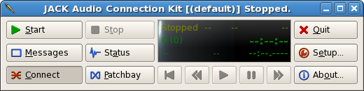
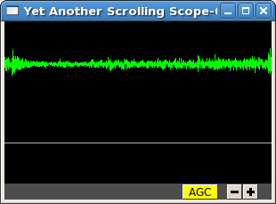
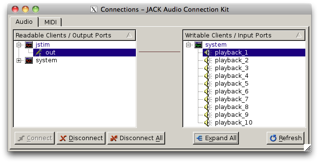
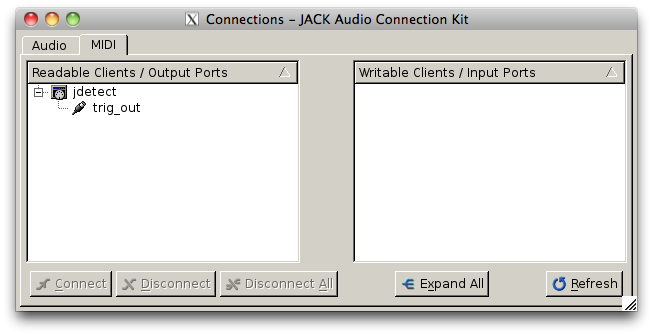

JILL Real-Time Auditory Neuroscience Framework: User Guide
Table of Contents
JILL is a system for auditory behavioral and neuroscience experiments. It consists of several independent modules that can present stimuli, detect vocalizations, and record data. Modules can be connected to send and receive sampled data (e.g., audio or neural waveforms) and event-time data (e.g. action potentials, stimulus onsets and offsets) in a low-latency, real-time framework. This modular design provides great flexibility in running closed- and open-loop experiments.
This document describes how to get started using JILL, and how to run some basic experiments. These tutorials assume you're running Linux, but they should work on OS X or Windows without too many changes.
If you're new to signal processing, you might want to check out the Basic concepts section first.
1 Installing JACK and JILL
This section describes how to install the requirements for the tutorials in this guide. The instructions should work on Debian 7 or any other Debian-based Linux system without modification. They should also work on Red Hat based systems or on an OS X system using MacPorts, but you'll have to find the equivalent packages in your package manager.
Some compiling from source is required, so you will need a reasonbly modern C/C++ compiler.
1.1 JACK and qjackctl
sudo apt-get install jackd1 libjack-dev qjackctl
If you wish, you can substitute JACK 2 for JACK 1.
1.2 YASS
YASS is a simple scrolling oscillosope that we'll use to visualize signals in JACK.
git clone https://github.com/dmeliza/yass.git cd yass make sudo make install
At this point you're ready to go through the first tutorial.
1.3 JILL prerequisites
Most of the prerequisites are availble through package managers:
sudo apt-get install scons libboost-all-dev libsndfile1-dev libsamplerate0-dev \ libhdf5-helpers libhdf5-tools libhdf5-dev
You also need to install ARF:
git clone https://github.com/dmeliza/arf.git cd arf sudo make install
1.4 JILL modules
git clone https://github.com/dmeliza/jill.git cd jill scons -Q modules
You can run the modules from their build directory. (e.g. modules/jstim). To
install modules in a system location, use the following command:
scons -Q install
The default install location is /usr/local/bin, but this can be changed with the
prefix argument.
2 Setting up JACK
This tutorial will show you how to start up the JACK server (or daemon) and plot input signals from a microphone or other source on a scrolling oscilloscope. Almost every computer comes with a sound card, which means you have a way of converting analog signals to digital bits that can be modified, visualized, or stored on disk.
You should have installed qjackctl, a graphical interface for controlling the
JACK server and making connections between clients. Later we'll discuss how to
do these tasks on the command line. The qjackctl interface initially looks
like this:

To configure the JACK server, click Setup. A window with many configuration
options will open. As shown in the figure, turn on Realtime, which should give
the JACK daemon a high priority in the operating system's scheduler. Set the
Frames/Period to something like 1024. Larger values will provide more buffering,
but increase the latency between input, processing, and playback. For many
applications, latency is less of a concern than buffer overruns and underruns
(called xruns in JACK parlance) because those mean lost data.

The correct driver to select will depend on the machine. On linux machines, the
correct choice is usually alsa; on OS X machines the correct choice is usually
coreaudio. Close the setup window (with OK) and then click Start in the main
interface. The display should show that the server is running along with some
useful statistics.
2.1 Adjusting input and output gain
The gain of your sound card's inputs and outputs can be set outside of JACK
using a mixer. On Linux, the mixer can be accessed using the alsamixer command
or one of the many graphical utilities that come with various desktop systems.
If you don't see signals on inputs or hear sound on outputs, check that the gain
for those channels is high enough.
2.2 Making connections and visualizing data
JILL/JACK modules communicate with each other through ports. There are input
ports and output ports, and you can make connections from outputs to inputs to
move data around. When it starts up, the JACK daemon will create input and
output ports corresponding to the outputs and inputs of the sound card. This
section demonstrates making a connection between a sound card input (or capture
port) and a third-party visualization program, yass.
Start yass at the command line (e.g. yass &). By default, yass will create
two graphs, which can be connected to one or more output channels. Initially the
plots will be gray, indicating that there isn't any signal. Click 'Connect' in
qjackctl to open up an interface for making connections:

To make a connection, select an output and an input port and click 'Connect'. In the figure above I've connected the first capture channel of the soundcard to the first channel of yass. If the channel is hooked up to a microphone or other sound source, the yass plot will show its activity, as below.

Note that you can connect multiple output ports to the same input port, in which case the inputs will be mixed: the data from the output ports will be added together, and this sum will appear in the input port. The same output port can be connected to multiple input ports.
3 Stimulus presentation
This tutorial demonstrates how to play audio stimuli through playback ports of a
sound card. There are a plethora of programs that can play sound files with
JACK. JILL includes a module called jstim that's specialized for presenting a
fixed list of stimuli multiple times in random order. It uses libsndfile
(http://www.mega-nerd.com/libsndfile) and can read a lot of different formats.
To play a single sound file repeatedly, run jstim as follows:
jstim -l <filename>
You'll see some messages on the console, but you shouldn't hear anything yet.
That's because jstim hasn't been connected to any of the sound card playback
ports. Swith to the Connection window in qjackctl and connect jstim:out to one
of the system playback ports:

Of course, you can connect the output to as many ports as you like, and they
will all receive the same input. Try connecting jstim:out to a yass input
port. Stop jstim with Ctrl-C.
jstim has lots of options for controlling the order and timing of stimulus
playback, which you can see by running jstim –help (all of the JILL modules
give help on how to run them this way). For example, to present all the wave
files in the current directory, each 5 times, in random order, with gaps of 5 s:
jstim -l -S -r 5 -g 5 *.wav
Finally, jstim can be instructed to connect to one or more output ports on
startup, before it starts playing any stimuli. This command will play a
stimulus one time on the first two playback ports:
jstim -o system:playback_1 -o system:playback_2 stimulus.wav
4 Recording
This tutorial demonstrates how to save data from a sound card input to disk.
Conceptually, this is the reverse of the playback operation. Instead of moving
data from a file to a playback port, you'll move data from one or more capture
ports to a file. There are many JACK modules that will record one channel to a
WAVE file or some other simple format, which we won't cover here. Instead, we'll
use the jrecord module, which is specialized for recording many channels of
data to an HDF5 file. HDF5 (http://www.hdfgroup.org/HDF5) is a structured file
format that can store data hierarchically, with detailed metadata. It's critical to
store experimental data in an open, extensible, and well-documented format, so
that it remains accessible and interpretable far into the future. jrecord uses
the ARF format to organize data in the HDF5 files.
Try recording continuously from one of the sound card's capture ports:
jrecord -i system:capture_1 <filename>
Let this process run for a few seconds, quit it with Ctrl-C, and then examine
the contents of the file with h5ls <filename>. You should see something like
this:
jill_log Dataset {14/Inf}
jrecord_0000 Group
You can print a log of all the events that occurred during the recording
session, including port connections and disconnections, with h5ls -d
<filename>/jill_log. The jrecord_0000 group will contain datasets, one for
each channel that was recorded. See the ARF specification for more information
on how data is organized.
You can (and should) record metadata about the experiment when making recordings by specifying attributes as commandline arguments. For example:
jrecord -i system:capture_1 -a experimenter=cdmeliza -a animal=bu38 -a mic=ME66 <filename>
You can list the attributes stored in an entry with the command.
h5dump -A -g /jrecord_0000 <filename>
All the entries created by jrecord have a timestamp attribute, which is the
number of seconds since January 1, 1970 UTC, and a jack_frame attribute,
which corresponds to the number of samples since the JACK daemon started.
IMPORTANT NOTE: You can use the same file to store multiple recording sessions
in the same file sequentially, but not in parallel. Don't let more than one
jrecord process write to the same file. The HDF5 library has no way to
coordinate access by multiple programs and the file will be corrupted.
Furthermore, be aware that if the JACK daemon is restarted, the internal frame
counter will reset, and the jack_frame attribute will be inconsistent in the
file. You'll get into even worse problems if you change the sampling rate.
For these reasons, it's strongly recommended that during data collection you
use only one ARF file per recording session.
4.1 Configuration files
It can quickly become tedious to specify long lists of attributes or input
channels on the command line. One solution is to write shell scripts for common
tasks. Another, complementary solution is to put commonly used options in
configuration files. All JILL modules have a common configuration file format,
with a simple syntax consisting of a list of option=value pairs. The options a
program supports are listed in the commandline help (e.g. jrecord -h). Use
the long form of any option. A configuration file for the jrecord command
above would look like:
in=system:capture_1 attr=experimenter=cdmeliza attr=animal=bu38 attr=mic=M66
To run jrecord with these options: jrecord -C <configfile> <data-file>
5 Triggered recording
This tutorial will describe how to use jrecord to record in triggered mode,
only saving data when an input signal rises above a certain level, or some
other event of interest occurs.
Data sampled at relatively high rates can take up a lot of space. In JACK, data are stored as 32-bit floating point values, so an hour of data from a single channel at 48 kHz requires about 660 MB of uncompressed disk space. For many experimental designs you only want to record when something interesting is happening, so it would be nice to trigger recording on those interesting events.
The example we'll work with is recording songs over the course of a juvenile
songbird's development. We'd like to start recording the bird when it starts
singing, and stop when it's done. We'll detect when the bird is singing using
the jdetect module, and use trigger events from jdetect to start and stop
jrecord.
5.1 Detecting the signal
The jdetect module uses a simple window discriminator to detect when an
input's power rises above a certain level. It works by counting the number of
times the signal crosses a threshold, maintaining a running count that's
compared against another threshold. When the number of crossings in the analysis
window (defined by the user) exceeds a threshold, the discriminator's 'gate'
opens. Once the gate is open, the signal continues to be compared against a
threshold (which can be different), and a separate running count is kept. Once
the number of crossings drops below a certain number, the gate is closed.
There are a number of options for jdetect that are described in the program's
help (jdetect -h). For now, we'll use the default settings. The jdetect
program has three ports: an input port, an output port, and an optional status
port. The input port receives the auditory signal; the output port emits events
when the gate opens and closes. The status port is optional and can be disabled
in normal operation. It gives a readout of the running threshold crossing count
and is useful for setting thresholds.
To start up the jdetect module and connect its input to the first capture
channel, run the following command:
jdetect -i system:capture_1 --count-port
The –count-port option will cause jdetect to create a status port where we
can monitor the state of the detector. Now start yass and connect it to the
status port of jdetect using qjackctl or the following shell command:
jack_connect jdetect:count yass:in_2. The second channel of yass will now show
the output of the integrator, as below. Make some noise and see what you get:

Note how the signal in the upper trace is associated with an increased in the
state of the integrator. When the integrator crosses its threshold, the output
port of jdetect will go high, and there will be a logged message, for example:
20130408T105856.109825 [jdetect] signal on: frames=79373312, us=518609266225 20130408T105910.111175 [jdetect] signal off: frames=80038848, us=518623130887
The first set of numbers is a timestamp for the event, with microsecond
precision if your platform supports it. jdetect also reports the frame count
(a 32-bit unsigned integer internal to the JACK system) and a 64-bit
microsecond-resolution timestamp (us).
You can test jdetect even if you don't have a bird or other animal to record, by
playing a sound with jstim or any other JACK-aware application, and connecting
the output to the jdetect input. For example:
jstim -o jdetect:in myfile.wav
This example demonstrates why the modular architcture of JACK can be so powerful.
5.1.1 jdetect parameters
Choosing the optimal parameters for jdetect can be a bit tricky, so a few
pointers:
- The open and close gates operate independently. If the open gate is too sensitive, it will trigger on transient noises. If it's not sensitive enough, it won't trigger even then when the animal is vocalizing. If the close gate is too sensitive, recording may stop during brief gaps in the vocalization. If it's not sensitive enough the recordings may not stop.
- The analysis granularity of both gates is controlled by the period-size option. Longer periods are more efficient; smaller periods carry more fine-grained temporal information.
- Each gate is controlled by three parameters: X-thresh, X-rate, and
X-period. The average crossing rate must exceed (for opening) or drop below
(for closing)
X-rate / (period-size * X-period). Crossing rate is related to the frequency and power of the signal. - The integration time is determined by
period-size * X-period. Longer integration times make the gates less sensitive to temporary dips or spikes in power, at some cost in sensitivity and temporal resolution. - Another parameter to adjust is the gain of the sound card input, or the
preamplifier for the microphone. Again, if you don't want to wait around for
your bird to sing, you can make a continous recording, clip out a song, and play
it to
jdetectuntil you've got the parameters right.
Once you've got a working set of parameters, it' a good idea to save them in a configuration file. For example:
name=bu38t in=system:capture_1 open-thresh=0.015 open-rate=25 close-thresh=0.015 close-rate=10
A word on client names. Each client that's connected to the JACK daemon has to
have a unique name. By default, JILL modules will use the name of the program
when connecting to JACK. If you have multiple jdetect modules running at the
same time, JACK will rename the clients using a sequential numbering scheme.
You can also manually specify the client name using the -n command-line
option, or in a configuration file, as above. Naming clients after the sound
isolation box or animal in the box can help in making sense of complex
connection graphs.
5.2 Triggered recordings and JACK events
First, let's talk about the concept of event-time data. If you look at the JACK
port list by running jack_lsp, you'll see that jdetect has an output port
called trig_out. To see it in the qjackctl Connection window, you'll have to
switch to the "MIDI" tab, which should look something like this:

MIDI is a well-established protocol for musical devices to communicate about event times. If you push the key for middle C on a MIDI keyboard, the keyboard doesn't generate the sound. Instead, it sends a short message on the MIDI bus that indicates what key was pressed and when. A synthesizer that receives the signal translates the event into an actual sound.
JACK can route MIDI events between clients in its real-time framework, and JILL modules use this mechanism to exchange information about event times. These signals aren't intended for use with real MIDI devices, and the internals of how the signals are passed aren't important. What's important is that audio ports carry sampled data, and can only be connected to other audio ports, whereas MIDI ports carry event data, and can only be connected to other MIDI ports.
If jrecord is run in triggered mode, it creates an event input port that can
be connected to any event output port. For example:
jrecord -t jdetect:trig_out -I pcm <filename>
jrecord will output messages indicating that it's started up and connected to
the ports we specified, but it won't start recording until jdetect sends it a
signal to start. The -I flag tells jrecord to create an input port called
pcm, but not to connect it to anything. Now play a stimulus with jstim:
jstim -l -g 5 -o jdetect:in -o jrecord:pcm <filename>
The -g flag tells jstim to wait 5 s between stimuli. You should start to
see a series of log messages like this:
20130524T145926.060274 [jdetect] signal on: frames=682333184, us=785038875072 20130524T145933.626545 [jrecord] created entry: /jrecord_0006 (frame=682671232) 20130524T145933.630329 [jrecord] created dataset: /jrecord_0006/trig_in 20130524T145933.634015 [jrecord] created dataset: /jrecord_0006/pcm 20130524T145934.060868 [jdetect] signal off: frames=682695680, us=785046426702 20130524T145934.060960 [jdetect] signal on: frames=682719232, us=785046917338 20130524T145936.375178 [jstim] next stim: bu49_ref_3x (3.04983 s) 20130524T145941.687170 [jrecord] closed entry: /jrecord_0006 (frame=683105280)
Notice how jrecord creates new entries each time there's a trigger. Each entry
corresponds to an HDF5 group. You may notice that the frame counter for the
beginning of the entry is before the frame count when jdetect reports
detecting the start of the signal. How is this possible? Through the magic of
prebuffering.
In triggered mode, when jrecord isn't writing samples to disk, it stores them
in a buffer. The size of the buffer is controlled by the –pretrigger
option. When the program receives an event indicating the start of a signal,
it writes the data in the buffer to disk and then starts writing new data, so
it can effectively look back in time and see what happened before the event.
Why is this important? For one, the signal detection algorithm has some delay
while it determines whether a sound is something interesting or a just a
transient sound, but once you know a sound is interesting, you want to record
the whole thing. Second, if you're interested in neural events that correlate
with a behavior, you want to know what was happening in the brain both before
and after the behavior occurred.
The –posttrigger option serves a similar function, but controls how much data
is recorded after the offset trigger. The default is to record 1 second before
an onset trigger until 0.5 s after the offset trigger. Finally, note that the
pretrigger buffer only starts filling after recording stops, so if an onset
event occurs before the buffer is filled, only the samples stored up to that
point are written to disk.
6 Recording stimulus-evoked activity
In this tutorial, we'll see how to do a classic "open-loop" neurophysiology experiment, where we present auditory stimuli and record neural responses. We won't use any new modules, but we'll wire them up in a different way. This exercise should show you how different kinds of experiments can be set up using the same basic components.
By now it should be clear what modules we need to run this experiment. We'll use
jstim to output sounds from a playback port, and jrecord to record neural
data from one or more capture ports. One way of setting things up would be to
let the two processes run independently, with jrecord recording continuously
and jstim playing stimuli at random. Of course, to know what stimuli were
presented, you'd want to record the stimulus output on one of the capture ports,
perhaps by putting a small microphone near the animal. (It's a good idea to do
this in any circumstance, to have a record of any distortions in the signal from
the amplifiers, and any delays due to buffering in the sound card.)
But there's a better way. We can use the event output from jstim to trigger
jrecord. What's more, the events that jstim emits include the filename of
the stimulus that was presented, which will be stored in the ARF file by jrecord.
First, start jrecord in triggered acquisition mode. If you're recording from
many channels you can list them all on the command line:
jrecord -t -f bu70_1.arf -i system:capture_1 -i system:capture_2 -i system:capture_3 ...
or use a configuration file to specify the input ports:
jrecord -C multichannel.ini -a animal=bu70 -a site=1 -f bu70_1.arf
Note the use of the -a flags to set attributes on the recorded entries.
multichannel.ini might look something like:
trig pretrigger=1.0 posttrigger=1.0 in=system:capture_1 in=system:capture_2 in=system:capture_3 in=system:capture_4 in=system:capture_5 in=system:capture_6 in=system:capture_7 in=system:capture_8 in=system:capture_9 in=system:capture_10 in=system:capture_11 in=system:capture_12
Next, instruct jstim to present a set of stimuli 10 times each in random
order, with 5 seconds between stimuli:
jstim -s -r 10 -g 5 -o system:playback_1 -e jstim:trig_in stimuli/*.wav
Note that we've connected the sound output of jstim to a playback port on the
sound card, and the event output to the event input of jrecord. You should
see jrecord create an entry for each stimulus as it's presented, and store
data between 1 second before each stimulus starts to 1 second after the
stimulus ends.
What if you don't want gaps in your recordings? One option is to run jrecord
in continuous mode:
jrecord -f bu70_1.arf -E stimuli -i system:capture_1 ... jstim -s -r 10 -g 5 -o system:playback_1 -e jstim:stimuli
Note that we used the -E flag to instruct jrecord to create an event port,
which we then connected to jstim. This port is not used to trigger, but any
incoming events will be stored in temporal register to the ARF file.
Alternatively, you can configure jrecord in triggered mode so that
pretrigger + posttrigger is greater than the gap between stimuli. When this is
the case, the first sample in each epoch will be immediately after the last
sample in the previous epoch. This gives you a continuous recording, but
conveniently divided into epochs associated with specific stimuli. You can
stitch the data back together later if you need to process it as a continuous
stream.
IMPORTANT NOTE: There is a delay between when jstim sends a signal to the
sound card and when the sound is output from the speaker. Almost all of this
delay is due to buffering. DO NOT use the times of the events stored by
jrecord in analysis, until you've determined what the delay is. It's strongly
recommended that you run the signal from the sound card output to one of your
recording system's inputs so that you know exactly what was being presented (or
better yet, use a microphone to record what the animal actually heard).
7 Other JACK clients
There are many third-party JACK clients that can be used with the JILL clients. Some that might be useful:
7.1 baudline
A very full-featured visualization client, with scrolling spectrograms and all. Not open-source, and the interface is pretty non-standard, but very useful. Doesn't work with JACK 2 as of this writing.
7.2 faust
Faust is a system for specifying signal processors (e.g., filters, delay loops) that can be compiled into JACK modules with convenient graphical user interfaces.
8 Basic concepts
This section introduces some basic concepts in digital signal processing. It can be skipped and referenced later.
- Physical quantities like voltage, sound pressure, and time are continuous (or analog), but most modern computers are digital, operating on discrete quantities.
- Analog values can be converted to digital values by sampling. Sampling occurs at discrete time points, and sampled values are limited in range and precision. For example, a 16-bit integer can represent only 65536 distinct values.
- Analog, time-varying signals are usually sampled at fixed intervals. The reciprocal of the interval duration is the sampling rate. The maximum frequency that can be carried by a digitized signal is half the sampling rate (also called the Nyquist frequency).
- Sampling rates are regulated by clocks. No two clocks are identical.
- Digital values can be converted to analog signals. This process is also governed by sampling rate and precision.
- A digital system is real-time if it processes data at the same rate as it occurs in physical reality. If it fails to keep up with this rate, data will be lost (from inputs) or distorted (on outputs).
- Most desktop computers and operating systems implement real-time behavior through interrupts and buffering. On the input side, data is sampled and stored in a buffer. When the buffer is full, an interrupt notifies the computer to stop what it's doing and handle the data. Buffers introduce latency equal to the number of samples in the buffer times the sampling rate.
- The data in the buffer need to be processed before the next interrupt occurs, or data will be lost. An overrun occurs when the process taking data out of the buffer fails to keep up with the process putting data in. An underrun occurs when the input process fails to keep up with the output process. Most desktop computers are doing many things at once, and may not be able to handle interrupts in a timely fashion. Larger buffers protect against this problem, but at the cost of more latency.
- JACK operates on a similar principle, though at a much higher level of abstraction. JACK clients can receive and send data through ports. Data are processed in blocks of samples called periods. When a period has elapsed, each client receives a block of data for each of its input ports, and has the opportunity to write data to its output ports. All of the clients have to finish processing their data before the period ends.
- JACK input ports can be connected to output ports, and the data written to an output will be passed to the inputs of all the connected clients. JACK provides input and/or output ports that correspond to the hardware inputs and outputs.
9 Performance and stability
This section deals with configuring JACK and JILL for low-latency, reliable operation. Modern multithreaded operating systems are typically doing a lot in the background, and there are often periods when the OS is tied up. If your application depends on receiving or producing a steady stream of samples, these periods of heavy activity can lead to glitches and dropouts.
One option for dealing with these problems is to use large memory buffers, which can hold samples during periods of heavy load. Large buffers mean long latencies. If you're only recording or presenting data, or if all the stimuli are defined ahead of time, or you can generate stimuli seconds to minutes before they're needed, you should use long periods (2048 samples or more) to ensure that data is not lost.
In closed-loop applications, the output of the system depends tightly on the input, and latencies typically need to be short. How short depends on the nature of the application. JACK can provide latencies on the order of 1-2 ms if properly configured. It's important to recognize, though, that Linux and OS X are not designed for realtime performance. Only a dedicated hard realtime system can provide guarantees on latency. Below are some measures for improving performance.
9.1 Increase buffer size or decrease sampling rate
Larger periods give JACK clients more time to process the data and make the whole system less vulnerable to xruns. Period sizes need to be a power of two. For example, to run JACK with a period size of 2048 samples:
jackd -p 2048
Increasing the number of periods for playback latency may also help. In
qjackctl you can adjust these parameters in the setup window and it will
report the expected latency.
9.2 Adjust other JACK parameters
Other things to try include:
- Make the JACK daemon more forgiving of xruns.
jackd -Z … - Turn off playback ports.
jackd -d alsa -C … - Decrease the number of channels to what you need. To enable only 4 capture and
playback ports:
jackd -d alsa -i 4 -o 4 …
Also try running JACK 2 instead of JACK 1; it's more fault tolerant and handles port connections without glitching.
9.3 Keep the system clean
Install a system with a minimal number of applications, and disable any recurring operations.
9.4 Install a low-latency kernel:
CCRMA at Stanford maintains a repository with kernels that have been patched for low latency operation (http://ccrma.stanford.edu/planetccrma/software/). You need to be running CentOS 5 or Fedora 16-18 to use these kernels. You can also try to recompile the kernel yourself with the realtime preemption patches enabled.
9.5 Disable CPU frequency scaling:
Run cpufreq-set -g performance or cpufreq-selector -g performance as root.
Disable bus-frequency scaling, C1E halt states, and EIST in BIOS.